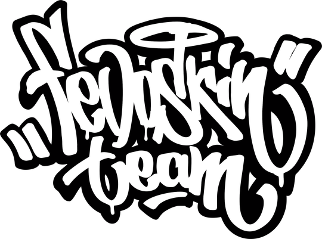
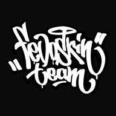

Новичок
Связка для новичка за 1 урок
[Короткое описание: что ученик получит после курса]
[N] видео · [N] мин

Все уроки бесплатно на время альфа-теста.
Замедление, зеркало и повтор 3 сек помогут разобрать движение. Повтор зацикливает момент, на котором стоит видео.
Урок 1 из 6 · 1:35
[Описание урока: что разбираем, на что обратить внимание, частые ошибки]
Платные программы. Покупаешь один раз — смотришь сколько угодно.
Тренировки лично с Федоскиным — создателем приложения. Всё общение и видео — в Telegram.
Сообщение уже будет написано — останется нажать «Отправить».
Ты альфа-тестер. Когда приложение станет платным, получишь месяц подписки бесплатно, а значок и аватар «Альфа» останутся у тебя навсегда.
Считаются уроки и минуты, которые ты реально смотришь. Статистика хранится на этом телефоне.
Общий рейтинг с другими брейкерами появится вместе с аккаунтами. А пока набирай минуты и делись своей статистикой в сторис.
Рейтинг по минутам тренировок в приложении. Обновляется раз в несколько минут.
Ты среди первых. Когда приложение станет платным, альфа-тестеры получат:
Разбор видео платный уже сейчас — это личная работа создателя приложения.
Позови друга в альфу по своей ссылке. За каждого — ещё месяц бесплатной подписки после запуска платной версии. Друзей можно звать сколько угодно.
Приглашено: [N] · Бонусных месяцев: [N]

Аватар видят другие в рейтинге. «α» — только для альфа-тестеров.
Видео уроков — на русском языке. Названия элементов — международные.